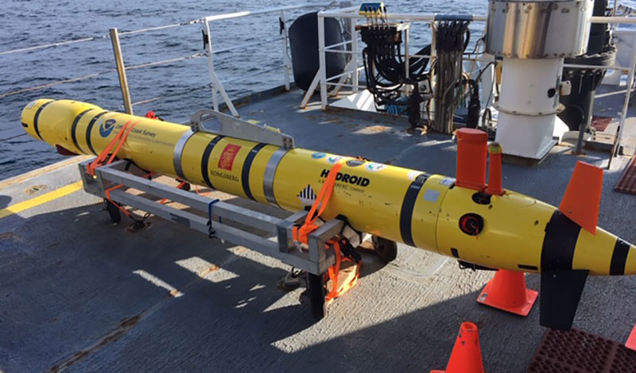

This article explores the evolution and significance of Autonomous Underwater Vehicles (AUVs), self-propelled robots designed for underwater exploration.
Originating from innovations in the 1980s, AUVs are distinguished as fully autonomous systems equipped with sensors and instruments for data collection in challenging underwater environments.
Structural and propulsion challenges, such as pressure and maneuverability, are examined. AUVs prove vital in ocean exploration, employing advanced technology for tasks like mapping the sea floor and studying aquatic habitats.
The article addresses limitations in acoustic modems' range and proposes sensor deployment strategies and navigation algorithms. AUVs are crucial in search and rescue missions, utilizing sonar and multi-AUV systems for efficient exploration.
Various area partitioning methods, including Voronoi partitioning and Delaunay triangulation, enhance exploration effectiveness.
The article emphasizes the intersection of technology and autonomy in AUV (Autonomous Underwater Vehicle) operations, highlighting their diverse applications in advancing underwater research and rescue missions.
Introduction
An Autonomous Underwater Vehicle (AUV) is a self-propelled, untethered, and programmable robot designed to navigate underwater environments with minimal human intervention.
These vehicles are often characterized by their compact and streamlined design, making them highly maneuverable and adaptable to various missions.
AUVs are equipped with an array of sensors, cameras, and instruments that allow them to collect valuable data and perform tasks underwater autonomously.
Analysis and discussion
The key importance of inventions and software advances in the 1980s helped promote the design and implementation of advanced autonomous systems.
It specifically acknowledges technicians, engineers, and computer programmers for their achievements, which contributed to a revival of interest in AUV-related academic science.
The classification of underwater vehicle (UV) systems into four sub-classes emphasizes the unique qualities of Autonomous Underwater Vehicles (AUVs) as completely autonomous systems capable of executing underwater operations independently.
Submersibles towed behind ships, remotely operated vehicles (ROVs), unmanned untethered vehicles (UUVs), and AUVs are all included in the classification.
It emphasizes that mission time constraints are dictated by power limitations, and autonomy dictates the degree to which an AUV may operate independently, highlights the difficulty in designing precise and robust controllers to achieve complete autonomy.
When developing AUV we come across structural issues such as pressure, depth, temperature, impact conditions, and water permeability.
Another issue we come across is propulsion in which multiple methods are researched to decide which method is suitable some of the methods we explored are thrusters with dynamic diving technology and jet propulsion which influences the maneuverability and dynamics of AUV.
The majority of AUV’s use batteries instead of fuel cells and solar power as it allows for silent operation and regulated speed.(Hassanein et al., 2021)

AUV’s are vital tools in Ocean Exploration. An example of their uses is to sweep areas in the ocean effectively to collect data in which can be used to map the sea floor, to locate underwater debris and to collect data on habitat and behavior of fish and other aquatic animals with the help of a collective group of UAVs and with their advanced technology each UAV has the capability to share data/information through hydro acoustic modem which leads to efficiency in executing the tasks. (Hollinger et al., 2012)
However due to the short range of the acoustic modem it is difficult to sweep large areas at once, to solve this issue one method is to deploys sensors above the ocean and we would use an algorithm to decide the closest sensor is to the AUV and send the AUV to it which allows us to collect the data using AUVs in any area within the sensors range, but the location of the sensors are unknown due to the random movement of the ocean one way to locate the sensors is to use long propagation wave to find the sensors so that the AUV do not run out of energy before sending the data to its users. (Blintsov and Aloba (2019b)) (Cheng et al., 2022)
The operation of AUVs is a fascinating blend of technology and autonomy. These vehicles are pre-programmed with specific missions or waypoints, and they use a combination of sensors and instruments to navigate and collect data while adhering to their programmed objectives.
AUV navigates using multiple techniques. (Paull et al., 2014)
The 3 main techniques they use are:
Dead reckoning/inertial navigation: Inertial navigation propagates the present state with greater accuracy by using gyroscopes and accelerometers.
However, the position error growth of all the methods in this category is limitless.
Acoustic transponders and modems: These methods rely on determining the time of flight (TOF) of signals sent by modems or acoustic beacons to carry out navigation.
Geophysical: Navigational techniques that make use of outside environmental data.
Processing and sensors that can recognize, detect, and categories specific environmental elements are required for this.
AUV are indispensable tools in search and rescue missions. (Cai et al., 2023) As they can reduce mission time while increasing the probability of success using sonars to collect images for target confirmation although it is not highly effective as it takes a long time for the AUV to find the target so to increase effectiveness they always use multi-AUV systems such that each AUV gets a specific task each time through the area partitioning method which impacts the overall effectiveness of the operation.
The area partitioning method is a technique used to divide a given underwater area into smaller sub areas for efficient exploration. (Guo et al., 2022)
These are the common methods of area partitioning:
The Voronoi partitioning method is a mathematical way of separating a large region into smaller cells where each cell has a site which is an equal distance from other sites.
A partitioning algorithm is used where each robot will receive data from its neighboring robots which would then allow it to create its own Voronoi cell. (Slimane and Tagina, 2020)
optimal polygon decomposition is the process of breaking down a complex polygon into smaller and simpler polygons with the use of back-and-forth coverage path plan between the decomposed polygons with the help of Dijkstra's algorithm and ant colony optimization. (Maza and Ollero, 2008) (Mayilvaganam, Shrivastava, & Rajagopal, 2022)
The Delaunay triangulation method is a method of creating a network of triangles from a set point in a plane.